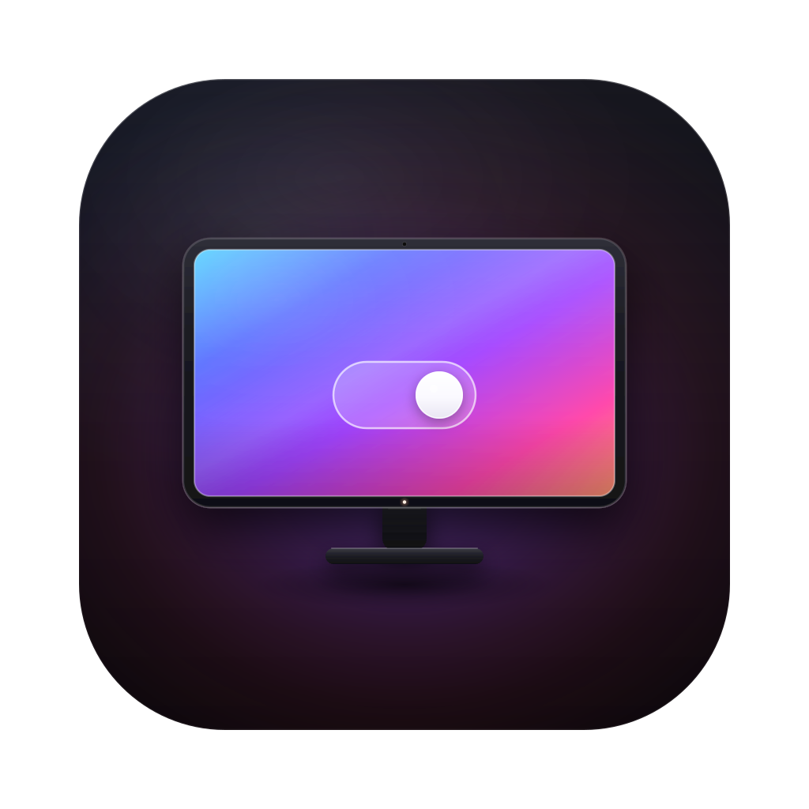
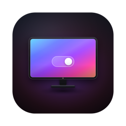
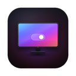
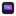

01 / Canvas
黑场，先让屏幕发光
像原生深色图标一样，把底压到近黑；只留一道 824 px squircle 的边界和极细的 rim light。屏幕成为画面里唯一的光源。

MoniSwitch / Icon studyApp icon · A screen, switched
MoniSwitch 的新图标。深色方寸里，一块被点亮的屏幕，与它唯一的开关。
黑场、极光屏、玻璃开关——把菜单栏里的显示器控制，收进一个不带文字的符号。
先不解释。让它在熟悉的深色 Dock 语境里，凭轮廓和一块亮着的屏幕被认出来。
Placeholder tiles · 占位图标，仅第三枚为真实图标
同一份矢量，从 256 到 16。屏幕负责颜色，开关负责识别；到了 16 px，它自然地退化成一块色域和一个光点。

256 px
128 px
16 px32 px 仍能读出屏幕与开关；16 px 只剩色块与光点——这是它在列表尺寸下应有的样子，不额外加细节去救它。
四个决定，组成这一个符号。没有第二层装饰，也没有解释性文字。
像原生深色图标一样，把底压到近黑；只留一道 824 px squircle 的边界和极细的 rim light。屏幕成为画面里唯一的光源。
显示器说 Moni，玻璃开关说 Switch。没有第二个图形，也没有一个小标语——只保留一个能被一眼记住的动作。
五段色标从青蓝走到珊瑚，再叠一层顶部柔光、一道斜向高光和一点底部暗角。它要看起来是亮着的，不是被涂上去的。
下边框上的电源灯是整枚图标唯一的暖色。它不承担识别，只负责让这台机器看起来是醒着的。